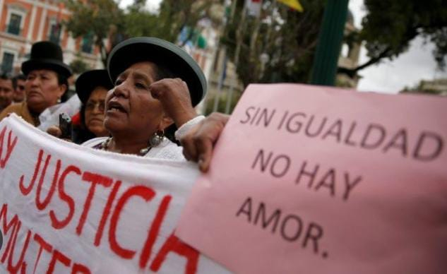
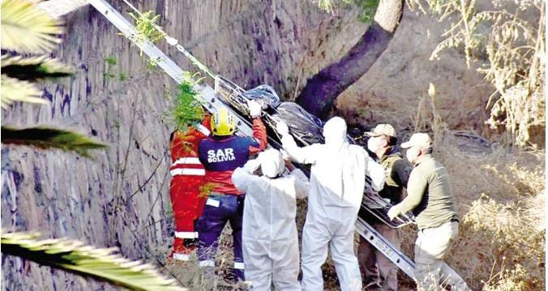
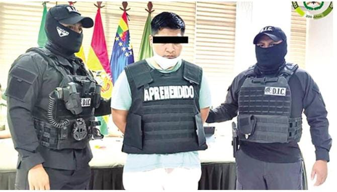

Es toda acción u omisión de servidoras o servidores públicos o de personal de instituciones privadas, que implique una acción discriminatoria, prejuiciosa, humillante y deshumanizada que retarde, obstaculice, menoscabe o niegue a las mujeres el acceso y atención al servicio requerido
La víctima, de 29 años, fue asesinada presuntamente por dos hombres, Moisés Gabriel C.G. y Henry R.J., la noche del 21 de agosto en el río Rocha, cerca del puente Cala Cala en Cochabamba. Según las investigaciones, los agresores actuaron por órdenes de una mujer que exigía el pago de una deuda que la víctima tenía con ella. Melina fue golpeada, agredida sexualmente y posteriormente asesinada. Su cuerpo fue hallado al día siguiente. Después de cinco días de diligencias, el martes 27 de agosto, las autoridades confirmaron su identidad después de trabajos de dactiloscopía e impresión digital.
La policía reporta que la madrugada del 1 de enero en la zona La Colorada, se produjo un caso de homicidio de la mujer identificada como Remedios R.S., quien habría quitado la vida a su pareja con un cuchillo en la región de Tupiza.
El feminicidio de Keina Lucía S.S., de 23 años, ha dejado a dos niños en la orfandad. Su esposo, Robin Gutiérrez Condori, quien inicialmente presentó una versión falsa de los hechos, terminó confesando ser el autor del crimen ocurrido en Santa Cruz. La víctima lo denunció por violencia en 2021.
